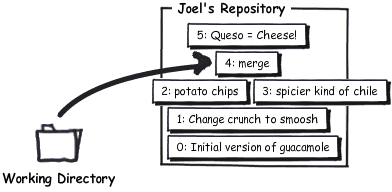
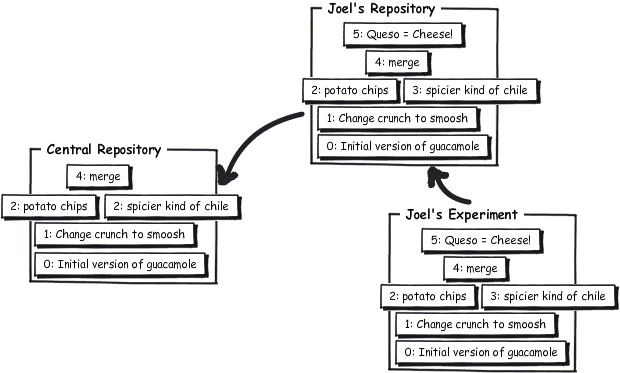

Mercurial lets you experiment freely. Imagine that during the course of normal editing, you get into trouble with your editor and do something catastrophic:
* 1/2 red onion, minced (about 1/2 cup)
* 1-2 habanero chiles, stems and seeds removed, minced
* 2 tablespoons cilantro leaves, finely chopped
* 1 tablespoon of fresh lime or lemon juice
* 1/2 teaspoon coarse salt
* A dash of freshly grated black pepper
* 1/2 ripe tomato, seeds and pulp removed, chopped
Smoosh all ingredients together.
Serve with potato chips.
* 1/2 edray onionway, incedmay (aboutway 1/2 upcay)
* 1-2 abanerohay ileschay, emsstay andway eedssay
emovedray, incedmay
* 2 ablespoonstay ilantrocay eaveslay, inelyfay oppedchay
* 1 ablespoontay ofway eshfray imelay orway emonlay
uicejay * 1/2 easpoontay oarsecay altsay
* Away ashday ofway eshlyfray atedgray ackblay epperpay
* 1/2 iperay omatotay, eedssay andway ulppay emovedray,
oppedchay
Ooshsmay allway ingredientsway ogethertay.
Ervesay ithway otatopay ipschay.
Gotta love emacs. Anyway, all is not lost. The most common way to recover from these things is just to hg revert them:
revert changed files back to committed version
C:\Users\joel\recipes> hg revert guac
That’ll put the files back exactly the way they were at the time of the last commit. Mercurial doesn’t like to delete anything, so instead of zapping the Pig Latin recipe, it renamed it:
C:\Users\joel\recipes> dir
Volume in drive C has no label.
Volume Serial Number is 84BD-9C2C
Directory of C:\Users\joel\recipes
02/11/2010 11:16 AM <DIR> .
02/11/2010 11:16 AM <DIR> ..
02/11/2010 11:16 AM <DIR> .hg
02/11/2010 11:16 AM 393 guac
02/11/2010 11:15 AM 510 guac.orig
2 File(s) 903 bytes
3 Dir(s) 40,958,005,248 bytes free
C:\Users\joel\recipes> del guac
C:\Users\joel\recipes> rename guac.orig guac
What if you had gone one step too far and actually committed?
C:\Users\joel\recipes> hg com -m "Pig Latin ftw" C:\Users\joel\recipes> hg log -l 3 changeset: 5:c7af1973de6d tag: tip user: Joel Spolsky <joel@joelonsoftware.com> date: Thu Feb 11 11:32:27 2010 -0500 summary: Pig Latin ftw changeset: 4:0849ca96c304 parent: 2:4ecdb2401ab4 parent: 3:689026657682 user: Joel Spolsky <joel@joelonsoftware.com> date: Mon Feb 08 16:07:23 2010 -0500 summary: merge changeset: 3:689026657682 parent: 1:a52881ed530d user: Rose Hillman <rose@example.com> date: Mon Feb 08 15:29:09 2010 -0500 summary: spicier kind of chile
undoes one commit, as long as you haven’t pushed it to anyone else.
There’s a command called hg rollback which will save your skin, but only if you haven’t pushed this change to anyone else. It only undoes one commit.
C:\Users\joel\recipes> hg rollback rolling back last transaction C:\Users\joel\recipes> hg log -l 3 changeset: 4:0849ca96c304 tag: tip parent: 2:4ecdb2401ab4 parent: 3:689026657682 user: Joel Spolsky <joel@joelonsoftware.com> date: Mon Feb 08 16:07:23 2010 -0500 summary: merge changeset: 3:689026657682 parent: 1:a52881ed530d user: Rose Hillman <rose@example.com> date: Mon Feb 08 15:29:09 2010 -0500 summary: spicier kind of chile changeset: 2:4ecdb2401ab4 user: Joel Spolsky <joel@joelonsoftware.com> date: Mon Feb 08 15:32:01 2010 -0500 summary: potato chips. No one can eat just one. C:\Users\joel\recipes> hg stat M guac C:\Users\joel\recipes> hg revert guac
Imagine you want to do a major experiment on the side. Your boss hired a new designer, Jim, and lately the specs you’ve been getting from him are just absurd. There’s fluorescent green text, nothing lines up (for “artistic” reasons), and the usability is awful. You want to come in one weekend and redo the whole thing, but you’re afraid to commit it because you’re not really 100% sure that your ideas are better than this nutty graphic designer. Jim is basically smoking a joint from the moment he wakes up until he goes to bed. You don’t want to hold that against him, and everybody else thinks that it’s nobody’s business as long as his designs are good, but really, there’s a limit. Right? And his designs aren’t good. Plus he’s kind of offensive.
With Mercurial, you can just make an experimental clone of the entire repository:
C:\Users\joel\recipes> cd .. C:\Users\joel> hg clone recipes recipes-experiment updating to branch default 1 files updated, 0 files merged, 0 files removed, 0 files unresolved
This isn’t as inefficient as it seems. Because both recipes and recipes-experiment share all their history (so far), Mercurial will use a file system trick called “hard links” so that the copy can be created very quickly, without taking up a lot of extra space on disk.
Now we can make a bunch of changes in the experimental branch:
C:\Users\joel> cd recipes-experiment
Here’s my grand guacamole experiment:
Smoosh all ingredients together.
Serve with potato chips.
Smoosh all ingredients together.
Serve with potato chips.
This recipe is really good served with QUESO.
QUESO is Spanish for "cheese," but in Texas, it's just Kraft Slices melted in the microwave with some salsa from a jar. MMM!
Here in the experimental repository, we can commit freely.
C:\Users\joel\recipes-experiment> hg com -m "Queso = Cheese!"
You can make changes and work freely, committing whenever you want. That gives you all the power of source control even for your crazy experiment, without infecting anyone else.
If you decide that the experiment was misguided, you can just delete the whole experimental directory. Problem solved. It’s gone.
But if it worked, all you have to do is push your new changes:
C:\Users\joel\recipes-experiment> hg push pushing to c:\Users\joel\recipes searching for changes adding changesets adding manifests adding file changes added 1 changesets with 1 changes to 1 files
Where did they go?
shows a list of known remote repositories
C:\Users\joel\recipes-experiment> hg paths default = c:\Users\joel\recipes
The “default” entry there shows you the path to the repository that hg push will push changes to, if you don’t specify any other repository. Normally, that’s the repository that you cloned off of. In this case, it’s a local directory, but you could also have a URL there.
C:\Users\joel\recipes-experiment> cd ..\recipes
Don’t forget, just because the change has been pushed into this repository…
C:\Users\joel\recipes> hg log -l 3 changeset: 5:9545248f3fc9 tag: tip user: Joel Spolsky <joel@joelonsoftware.com> date: Thu Feb 11 12:59:11 2010 -0500 summary: Queso = Cheese! changeset: 4:0849ca96c304 parent: 2:4ecdb2401ab4 parent: 3:689026657682 user: Joel Spolsky <joel@joelonsoftware.com> date: Mon Feb 08 16:07:23 2010 -0500 summary: merge changeset: 3:689026657682 parent: 1:a52881ed530d user: Rose Hillman <rose@example.com> date: Mon Feb 08 15:29:09 2010 -0500 summary: spicier kind of chile
… doesn’t mean we’re working off that version yet.
C:\Users\joel\recipes> type guac * 2 ripe avocados * 1/2 red onion, minced (about 1/2 cup) * 1-2 habanero chiles, stems and seeds removed, minced * 2 tablespoons cilantro leaves, finely chopped * 1 tablespoon of fresh lime or lemon juice * 1/2 teaspoon coarse salt * A dash of freshly grated black pepper * 1/2 ripe tomato, seeds and pulp removed, chopped Smoosh all ingredients together. Serve with potato chips. C:\Users\joel\recipes> hg parent changeset: 4:0849ca96c304 parent: 2:4ecdb2401ab4 parent: 3:689026657682 user: Joel Spolsky <joel@joelonsoftware.com> date: Mon Feb 08 16:07:23 2010 -0500 summary: merge
shows which changeset(s) you’re working off of
See? That “Queso” stuff is in changeset 5. But my main repository was working off of changeset 4, and just because someone pushed new changes into the repository, doesn’t mean they’ve showed up in my working directory yet, so I’m still working off of changeset 4.
If I want to see what’s in changeset 5, I have to use the hg update command:
C:\Users\joel\recipes> hg up 1 files updated, 0 files merged, 0 files removed, 0 files unresolved C:\Users\joel\recipes> hg parent changeset: 5:9545248f3fc9 tag: tip user: Joel Spolsky <joel@joelonsoftware.com> date: Thu Feb 11 12:59:11 2010 -0500 summary: Queso = Cheese! C:\Users\joel\recipes> type guac * 2 ripe avocados * 1/2 red onion, minced (about 1/2 cup) * 1-2 habanero chiles, stems and seeds removed, minced * 2 tablespoons cilantro leaves, finely chopped * 1 tablespoon of fresh lime or lemon juice * 1/2 teaspoon coarse salt * A dash of freshly grated black pepper * 1/2 ripe tomato, seeds and pulp removed, chopped Smoosh all ingredients together. Serve with potato chips. This recipe is really good served with QUESO. QUESO is Spanish for "cheese," but in Texas, it's just Kraft Slices melted in the microwave with some salsa from a jar. MMM!
See what happened here? The changes came in, but they were on top of the version I was working on. push and pull just send changes from one repo to another—they don’t affect the files I’m working on at the moment.
Right now here’s the state of repositories:
Mercurial is flexible about moving changes around from repository to repository. You can push straight from the experimental repository into the central repository:
C:\Users\joel\recipes> cd ..\recipes-experiment C:\Users\joel\recipes-experiment> hg outgoing http://joel.example.com:8000/ comparing with http://joel.example.com:8000/ searching for changes changeset: 5:9545248f3fc9 tag: tip user: Joel Spolsky <joel@joelonsoftware.com> date: Thu Feb 11 12:59:11 2010 -0500 summary: Queso = Cheese! C:\Users\joel\recipes-experiment> hg push http://joel.example.com:8000/ pushing to http://joel.example.com:8000/ searching for changes adding changesets adding manifests adding file changes added 1 changesets with 1 changes to 1 files
That pushed change 5 from the experimental repo directly into the central repository. Now, if I go back to my repository, there’s nothing left to push!
C:\Users\joel\recipes-experiment> cd ..\recipes C:\Users\joel\recipes> hg out comparing with http://joel.example.com:8000/ searching for changes no changes found
That’s because Mercurial knows that the central repo already got this particular changeset from somewhere else. That’s really useful, because otherwise it would try to apply it again, and it would be massively confused.
After they made a job offer to designer Jim, he said he would start work right away, but then he didn’t show up for two months. People had mostly forgotten about him and about the job offer, and when he showed up at the office for the first time to start work, looking rather sunburned, to be honest, nobody quite knew who he was or what was going on. It was pretty funny. He is kind of a generic looking guy. Eventually they figured it out, but since he was new, nobody had the guts to ask him what the hell had happened. Just like they never ask him about the bruises and scratches on his face. Whatever. We hate that guy.
Sometimes it may happen that you discover that, months earlier, you made a mistake.
C:\Users\joel\recipes> hg diff -r 1:2 guac diff -r a52881ed530d -r 4ecdb2401ab4 guac --- a/guac Mon Feb 08 14:51:18 2010 -0500 +++ b/guac Mon Feb 08 15:32:01 2010 -0500 @@ -8,4 +8,4 @@ * 1/2 ripe tomato, seeds and pulp removed, chopped Smoosh all ingredients together. -Serve with tortilla chips. +Serve with potato chips.
Potato chips? WTF?!
Mercurial can backout an old changeset from the past for you. It looks at the changeset, figures out the opposite, and does that to your current working directory. Let’s try backing out that old revision 2.
C:\Users\joel\recipes> hg backout -r 2 --merge reverting guac created new head changeset 6:d828920f7f85 backs out changeset 2:4ecdb2401ab4 merging with changeset 6:d828920f7f85 merging guac 0 files updated, 1 files merged, 0 files removed, 0 files unresolved (branch merge, don't forget to commit)
Holy crap, what just happened?
C:\Users\joel\recipes> hg diff diff -r 9545248f3fc9 guac --- a/guac Thu Feb 11 12:59:11 2010 -0500 +++ b/guac Thu Feb 11 14:19:34 2010 -0500 @@ -8,7 +8,7 @@ * 1/2 ripe tomato, seeds and pulp removed, chopped Smoosh all ingredients together. -Serve with potato chips. +Serve with tortilla chips. This recipe is really good served with QUESO. C:\Users\joel\recipes> hg com -m "undo thing from the past" C:\Users\joel\recipes> hg push pushing to http://joel.example.com:8000/ searching for changes adding changesets adding manifests adding file changes added 2 changesets with 2 changes to 1 files
Now, a lot of time may have passed. The chips might already be gone from the recipe. All kinds of spooky stuff might have happened that makes it impossible to merge in this change. In that case, you’re going to get merge conflicts, which you’re going to have to resolve somehow. We’ll talk about that in the next tutorial.
Test yourself
Here are the things you should know how to do after reading this tutorial:
- Revert accidental changes, before and after checking in
- Clone a repository locally for experiments
- Push between repositories
- Revert an old mistake that’s been in the repository for ages